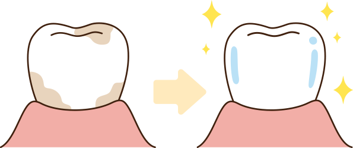
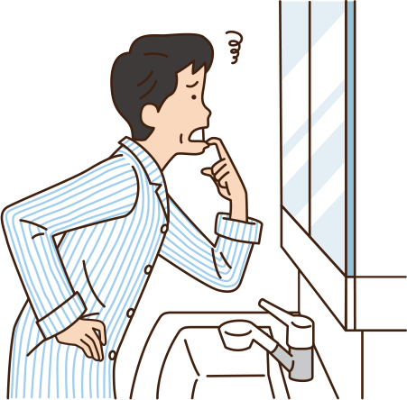
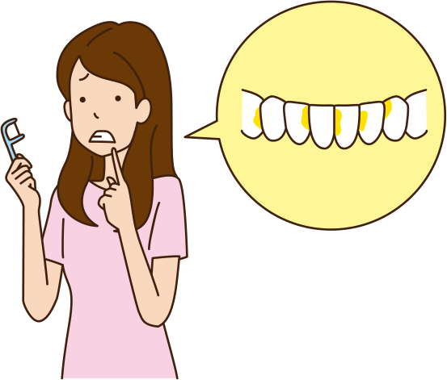
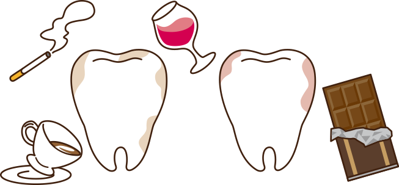
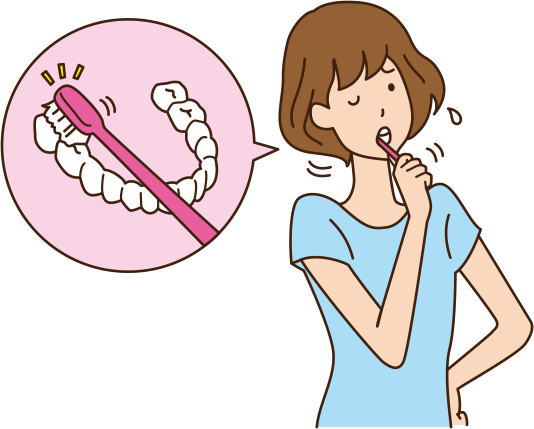
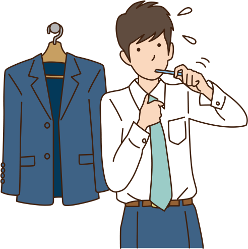
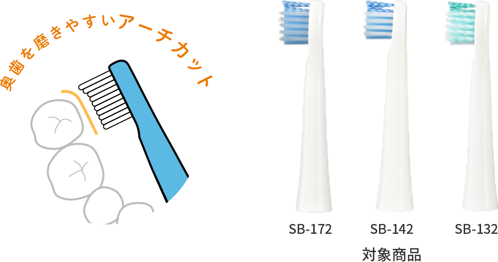
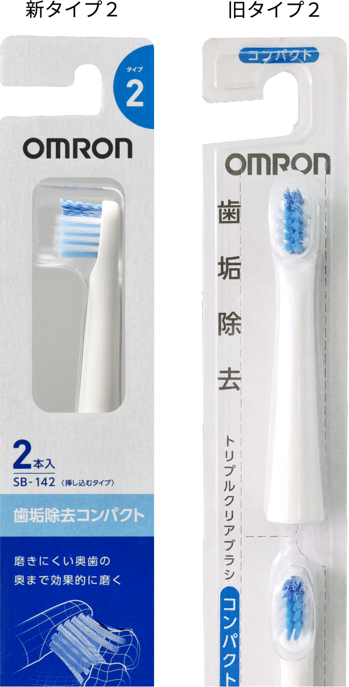

しっかりと
歯垢除去したい
口腔内の微生物によって形成される「歯垢」は、
虫歯や歯周病の原因となります※1

歯ぐきの衰えや
歯周病が気になる
「歯周病」は、歯と歯ぐきのすき間から侵入した細菌が
歯肉に炎症を引き起こし、さらに歯を支える骨を溶かす
病気です※2

歯のすき間に
食べ物が詰まりやすい
通常の歯ブラシでは「歯のすき間」の歯垢を完全に
落とすことができず、磨き残しから歯肉の炎症に
つながることも※3

珈琲屋タバコの
着色汚れが気になる
コーヒー・チョコレート・タバコ・ワインなど
日々の生活には「着色汚れ」の原因がたくさん潜んでいます

口が小さく奥歯が
しっかり磨きにくい
「奥歯」は他の歯よりも磨きにくく
他の歯と比較すると平均して約10年寿命が短いと
いわれています※4

一気に
歯のすみずみまで
効率よく磨きたい
約2倍のワイドヘッド※で、一気に歯を磨きます
※オムロン商品比較で植毛面積が約2倍
-
『タイプ2』の
替えブラシが
新しくなりましたブラシの毛先を改良し、
奥歯までしっかり磨けるアーチカットを
採用しました -
新旧どちらの替えブラシも
お手持ちの電動歯ブラシでご使用いただけます※
※タイプ2対応の電動歯ブラシのみ